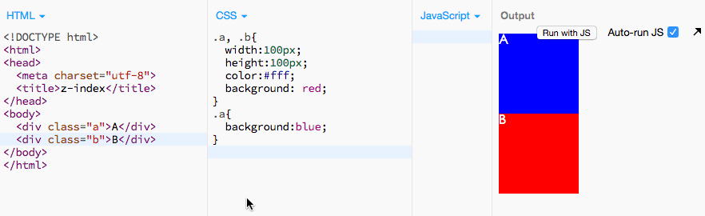
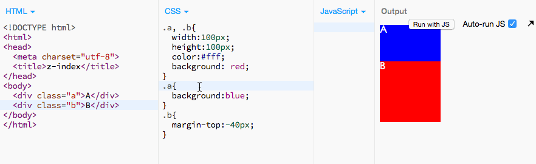

z-index之我见
2015/07/21 14:30写在前边儿
z-index表示元素的层级，我们常常在涉及到元素覆盖的时候用它。
前段时间老大让我整理项目CSS中所有的z-index，按顺序排列，不要一下子5一下子99的，我不知道写CSS的同学们在用z-index的时候有没有体会到，当这个元素的层级需要提高的时候，究竟它的z-index值为多少合适呢，少了又怕有其他元素会再遮挡住。我发现这是一个很容易忽视的问题，所以好好学习了下。
它看起来只是一个很平常的属性，好像多一个少一个并没啥区别，可是提高性能问题，从一点一滴做起。我想谈谈：啥时候该用z-index，滥用z-index有啥坏处，可不可以避免z-index。
z-index是啥
W3C给的定义：z-index属性设置元素的堆叠顺序。拥有更高堆叠顺序的元素总是会处于堆叠顺序较低的元素的前面。
顾名思义，z-index是表示元素在Z轴的堆叠顺序。z-index值越大，离用户越近，越小离用户越远。用于元素覆盖，不过不是所有元素覆盖都要用它，后面会讲到。
z-index只能作用在有定位的元素（绝对定位：absolute/fixed；相对定位：relative），默认定位和static都不参与z-index的对比。
层级关系比较
一个同事给我们项目做一个UI组件库，在element元件中，我发现很多元素还未使用就已经加了z-index值，我问其为啥，其说怕别的东西覆盖到这个元素上面了，提前加上。其资历比我老，我当时不好说啥。我认为z-index值的大小和上下文都有关，不是独立存在的，不同的应用场景有不同的需要，应该在实际具体应用中再加上定位 边距等十分限定的属性，而不是提前在组件库就写好搞得像很有远见似的。
注：后文所提到的定位元素指：绝对定位（absolute/fixed），相对定位（relative）。
同级元素
1、未定位的元素，不存在z-index值，但是也会有覆盖问题，比如margin为负数。这时按文档流的顺序，后面的元素遮盖前面的。
2、定位的元素层级高于未定位的元素。
可以看到，有定位的元素A覆盖到未定位的元素B上。A绝对定位时会跟着B一起向上偏移。
3、都有定位的元素，未定义z-index的，按书写顺序，后面的覆盖前面的。